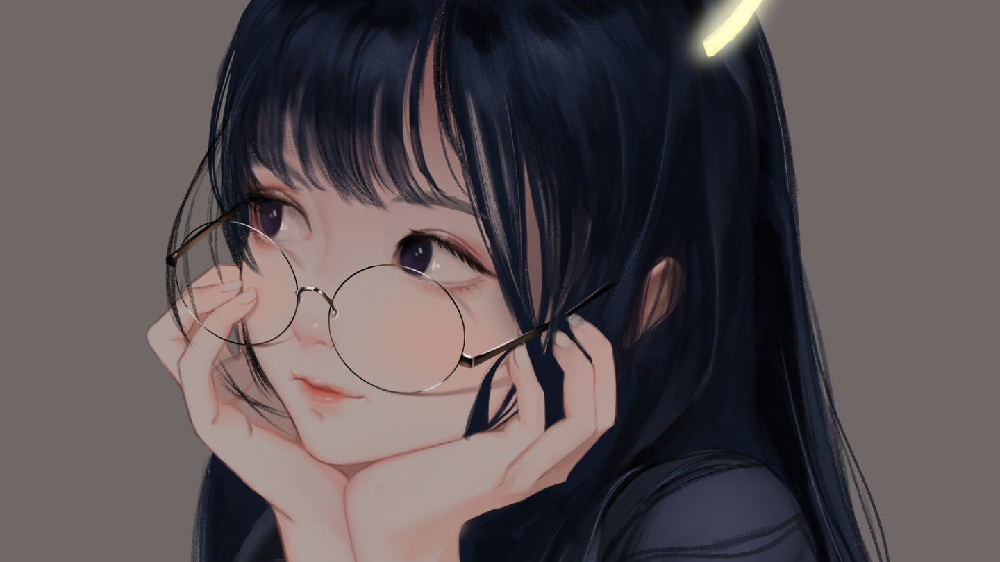

随笔：第3篇-关于西双版纳的秋天以及过期了的小朋友

本文写于：2020/11/08 晚八点。>
这应该是在第二个异乡的第一个秋天，准确说已经快冬天了。可能全国大部分地方都已经穿棉袄了，而我还穿着短袖，夏天的拖鞋，跑来跑去。
对于西双版纳的秋天，是没有明显的界限来区分的，如果有，那就是早晨的异常寒冷，和大中午就回到了夏天的太阳。偶尔来的几场超级暴雨，以及冰雹，才预示着秋冬的来临。果然彩云之南就是这样色儿的，这一点和昆明有些相像，但是昆明的冬天是需要穿棉袄的，这一点我还是比较清楚，冬天就可以去海埂大坝喂海鸥，去大观园溜达。
物是人非，这是我对这个季节的概况，身边大抵还是这样，变了又没变。
记忆中小时候的秋天，是农田里的蚱蜢，是秋收后的稻香，是傍晚时分纷飞的大雁，听取蛙声一片，小河里的鱼虾，还有古诗里的枯藤老树昏鸦，哈哈，还有围绕草垛的躲猫猫，以及最后破坏气氛的一句“你妈叫你回家吃饭啦！”。
而我像一个过期了的小朋友，既憧憬着未来，又回望着过去。“18岁的最后一天还是没能成为奥特曼，我知道我可能当不了奥特曼啦”，这是最近在抖音里看到的文案， “心里有光每个人就都是奥特曼哦”，这些句子都很幼稚，
就像“全世界都在催着你长大，只有我这里会守护着你的童心” 。而我的密语是，“可乐吨吨机，注意是百事党，卟卟，这到底是怎样的暗号？”。
也不知道从什么时候开始，每个东西上都有一个日子，秋刀鱼会过期，肉酱也会过期，连保鲜纸都会过期。我开始怀疑，在这个世界上，还有什么东西是不会过期的。
然后，我知道我应该是有心事了，这一点很可怕，我看穿了自己，细思极恐。我想回到过去，和曾经的自己说说，应该再努力一点，或者说是非常努力一点，甚至说该跑起来了。
我还是那个过期了的小朋友，虽然承担着初为大人的压力，又有着时常想逃避的心情，
但我还想来一场围着草垛躲猫猫满场狂奔，我还是很幼稚对于一些温馨的场景很感动。 我深知这一切都很宝贵，我要将他好好收藏起来。
以至于最近就很喜欢这类的句子，大抵上就是说，灵魂腐烂，思想潮湿，但我不允许任何人来打乱我好不容易调整好的状态，
那些我们不曾留意的日子，回头看来都弥足珍贵，你不快乐是因为你没有好好爱自己，且常常因为别人而消耗着自己，嗯，要平静生活，且去看看天边日落。
故事的结局，我依然是那个过期了的小朋友，我既想着有一天能成为奥特曼，嚷嚷着拯救世界，又想着应该帮妈妈洗碗。
我依然在心底珍藏着那些闪光的回忆，总有一天我要将他们带回逃离。最后，希望每个过期了的小朋友的世界，永远可爱生动，然后，要永远相信魔法和英雄哦~。